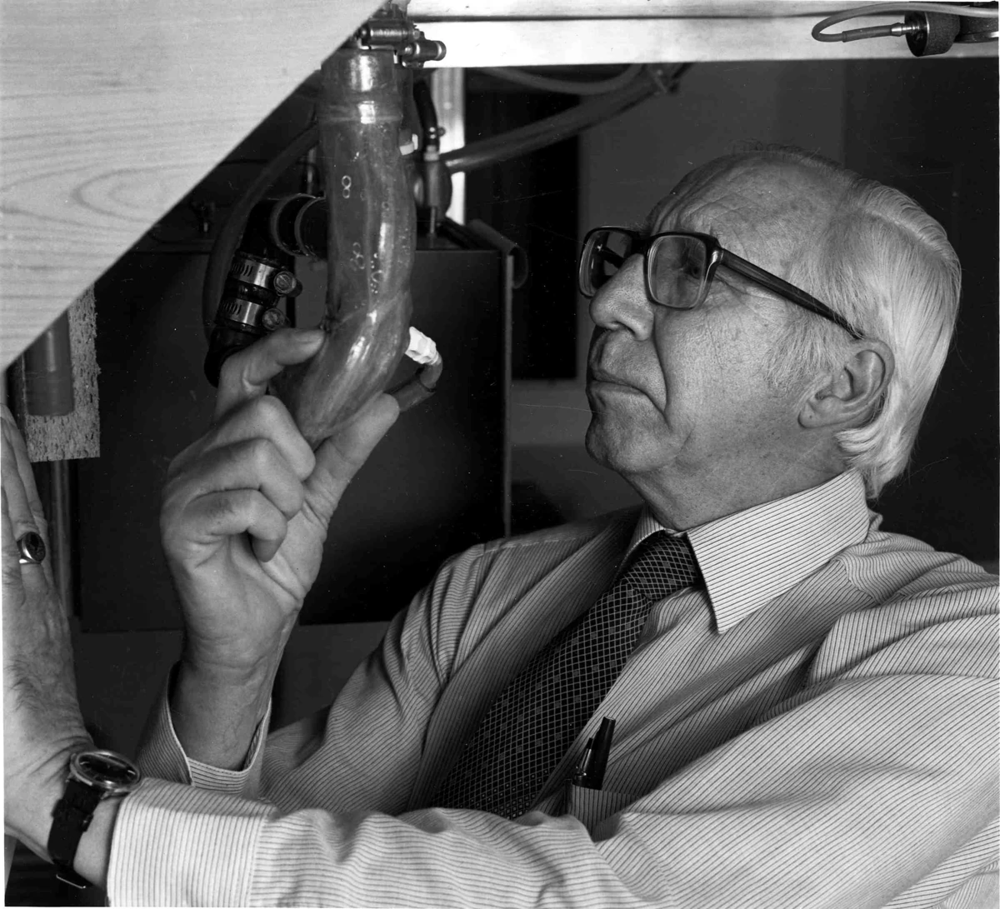

这样的工作，让你有劲
你更在意一群人能用上的办法，愿意从工具和原型入手。你想先做出可用的功能，再根据试用反馈调整做法。
工作的一天
工作例子：为一类使用者制作工具原型，测试能否完成指定任务，记录使用问题，再修改功能和操作流程。
可以优先了解的科室／单位
这里按工作特点提供探索线索，结合实际体验和培养要求再判断。
博医与所列企业无任何利益相关，企业单位仅供参考。
值得试试的职业道路
主要了解
医疗工具与服务产品开发
了解重点：面向一类使用者，制作并改进可用工具，需要工程或产品训练。
对教学有兴趣时
医学模拟教具开发
了解重点：使用对象转为学习者，需要补充教学目标和训练评价知识。
想研究效果时
医疗工具的使用效果研究
了解重点：从做出工具转向检验效果，需要补充研究设计。
认识一位职业榜样

把喜欢，放进真实工作里
如果原型工作主要用于比较几种解释，你可能更想把它继续改成能用的工具。可以先和团队讲清这轮要交付什么；进入真实医疗产品前，还需专业验证和相应审批。
下个月，先试这一件
用纸面或软件做一个课程资料查找原型，请同学试用，按反馈改一版，不接入真实医疗服务。